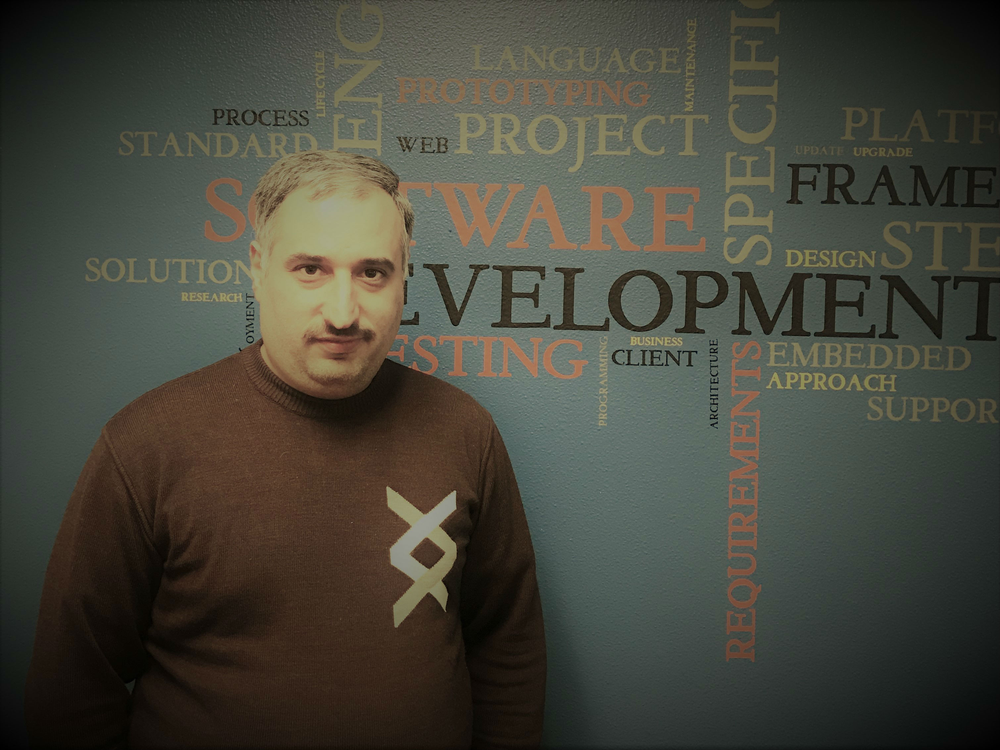

Hasan ALRUBAYE
(208)392-2811
halrubia@gmail.com
Who am I !!
I have been worked for 17 years in computer science. I have a master's degree in Computer Science. I have worked as Professor and Supervisor and have 9 years of experience in a teaching and implementing graduate-level projects.
Professional software developer with several certifications, seeking an opportunity to utilize my skills as a senior software developer.
Key Skills
Structural Programming Language
Pascal,C,C++,Prolog
Visual Programming Language
VB,VC,Matlab,C#
Web Development
HTML5,CSS3,JavaScript,jQuery,BootStrap, Asp.net MVC5
Database System Language
FoxPro,Visual FoxPro,SQL Server
Application Software
Microsoft office,Adobe PhotoShop,Adobe Premier,Adobe Audition
Operating Systems
Microsoft : Windows 2000 – Windows 10
Certifications
Web Design in Pioneer Academy
Programming in VB.net at Al Mansour Training Academy
Programming in VB.net at Al Mansour Training Academy

Work Experience
June,2016 - Decemper,2016 | Idaho department of Labor
Software & Web Development Intern
I learned ASP.Net MVC5.I gained my experience with HTML,CSS,JavaScript. I gained my knowladge
with secure Database using SQL server.I learned jQuery. I aided in JobScape Web application
project and I aided in IP-address filtering using SQL Server2014.
Feb,2005 - Seb,2014 | AL Mansour University College
Professor for Computer Science & Software Engineer
I taught many subjects for 2nd,3rd ,and 4th year in the computer science department. I was teaching
a data structure for 2nd year , computer graphics for 3rd year, and digital image processing
for 4th year since 2005. I taught a structural programming language in C++ at computer communication
engineering department. In a software engineering department I taught a computer graphics.
I accomplished a lot of projects for undergraduate students . I had a trainer job in a summer.
I trained students how to install local wireless network. I got opportunity for training
in AL Mansour university training academy.
Seb,2005 - April,2010 | Irai CommisionThe Independent High Electoral Commission is Iraq's electoral
commission.
Subervisour & Application Analysit
I worked as a data entry temporary employee in the constitution voting in 2005. I worked as a
supervisor for a data entry temporary employee. My responsibility was to supervised 20 persons.
I planned the duty of each one, gave them tasks, and collected their productions. in 2006,
I worked as a manager of voting station in terminal center and supervisor in the head quarter.
I tested the software that collected the voting and gave my feedback to the developer. These
feedback reducing the bug of application during the computing process in 2010.
2004 - 2005 | Mazen AL Saad Inc.
IT Specialist Technition
I collected the Tenders from a government agencies. I had a charge for negotiation about contracts
with the government agencies I worked as a technical support in the government agency for
the devices that saled by Mazen AL Saad Company. I supplied the best solution to the customer
in the head quarter of company I assembled the computer devices that ordered by government
agency or person.
Education
2002 - 2006
Iraqi Commission for Computer & Informatics,I.C.C.I,
Masters of Computer Science
1997 - 2002
AL Mansour University College
Bachelor of Computer Science